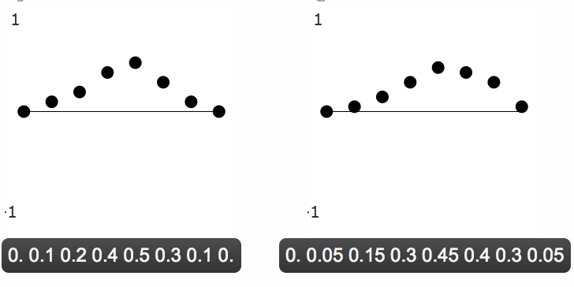
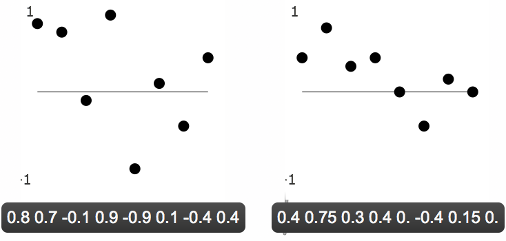
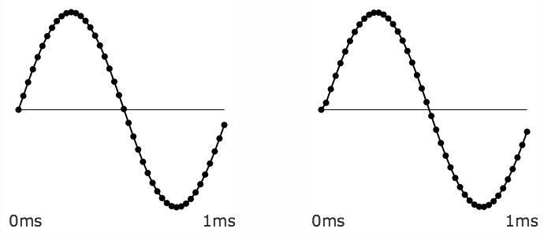
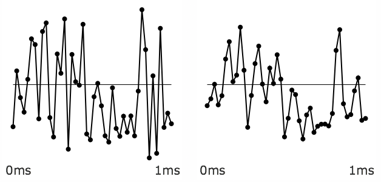
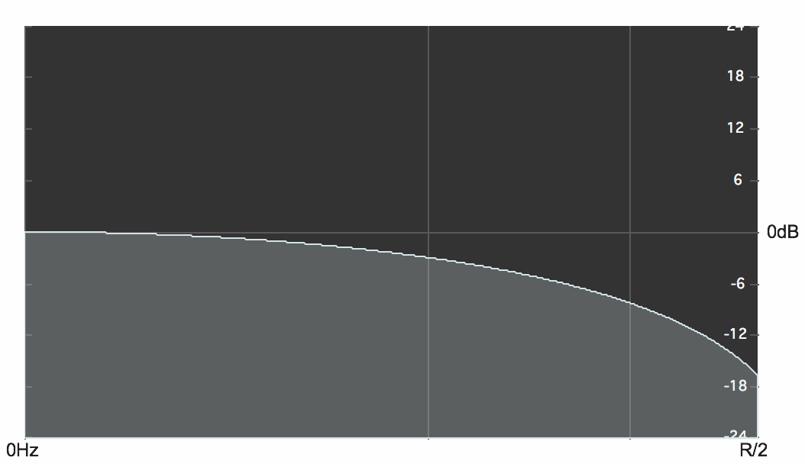
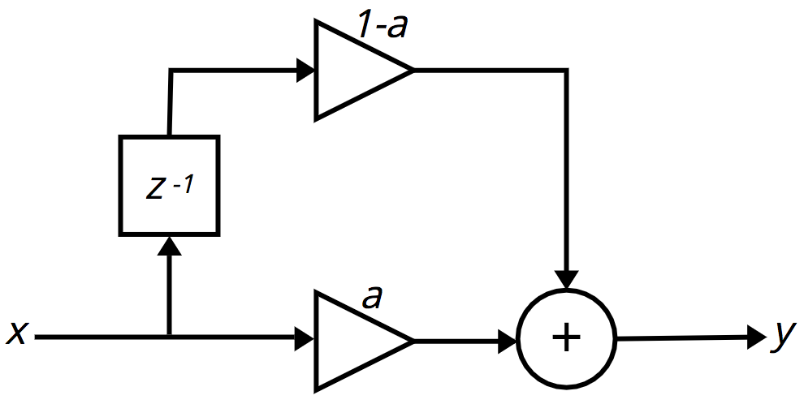
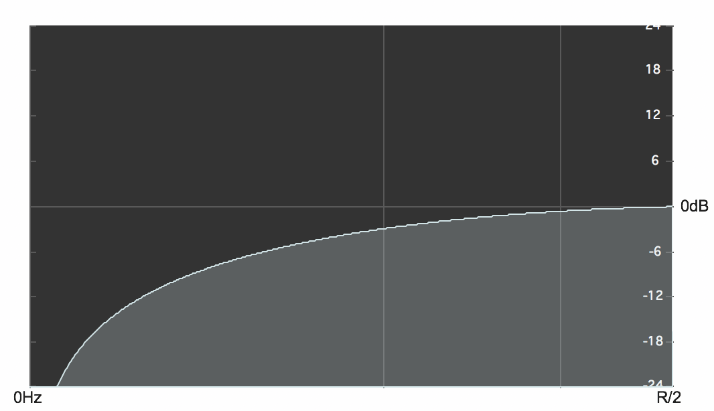
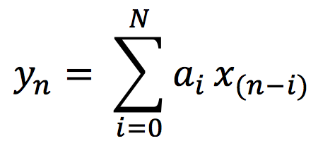

A lowpass filter reduces the high-frequency content of a signal while allowing lower frequencies to pass through.
There are many reasons why one might want to attenuate or remove high frequencies. In the analog-to-digital conversion (ADC) process of digitizing an electrical signal, it's important to remove frequencies that are above the Nyquist frequency (i.e., that are above 1/2 the sampling rate) so that they wont be misrepresented in the digital signal. A lowpass filter used for that purpose is called an anti-aliasing filter. In a digital signal received from a sensor (e.g., a motion detector), the data might be noisy and jittery or might contain occasional spurious incorrect values. A smoothing lowpass filter can smooth out those inconsistencies. And in the case of an audio signal, a lowpass filter is often used to reduce high-frequency hiss in a recording, or to reduce the amplitude of upper frequencies in the sound itself, in order to change the sound's timbre.
In all cases, reducing high frequency content of a signal results in a slightly smoother-looking waveform in the time domain.
Most lowpass filters smooth the input signal by taking a weighted combination of the current input sample and one or more previous samples, to calculate a weighted moving average. The simplest example of this would be a filter that outputs the average (mean) of the current input sample and the previous input sample. The difference equation for that lowpass filter would be:
yn = (xn+xn-1)/2
where xn is the value of the current input sample, xn-1 is the previous input sample, and yn is the current output sample.
This kind of averaging won't alter the input signal much at all if the signal is changing very gradually from one sample to the next, but it will smooth the signal considerably if the input changes drastically from sample to sample. Thus, high frequencies, which cause more rapid and radical change in the signal, get smoothed out a little, reducing the high-frequency energy.
In case that's not intuitively obvious to you, let's look at a couple of examples. If an input stream of numbers is 0. 0.1 0.2 0.4 0.5 0.3 0.1 0.—and we assume an initial xn-1 with a value of 0.—the output would be 0. 0.05 0.15 0.3 0.45 0.4 0.2 0.05, which has a progression and shape very similar to the input.

A smooth input is only slightly smoothed by the lowpass filter
Whereas, with a jagged input stream (containing high-frequency energy), a smoothing filter will have a more remarkable effect. With an input stream such as 0.8 0.7 -0.1 0.9 -0.9 0.1 -0.4 0.4, the output would be 0.4 0.75 0.3 0.4 0. -0.4 0.15 0., which is significantly different in shape and amplitude (especially of the jagged high-frequency edges) from the input.

A jagged input is more noticeably smoothed by the lowpass filter
Similarly, in audio signals, a sound without much high-frequency energy, such as the 1000 Hz sine tone shown below, is not much affected by this simple lowpass filter.

A 1KHz sine tone almost totally unaffected by the lowpass filter
Whereas a noise signal will show a more significant change because of the attenuation of its high frequencies.

A noisy input is changed more by the lowpass filter
Below, you can see the gently sloping amplitude response of this lowpass filter shown as a graph of amplitude over frequency.

Effect of the lowpass filter yn = (xn+xn-1)/2
It's worth pointing out that the averaging filter described above is just one instance of a slightly more general filter that would allow any balance between the current input sample and the previous input sample. The averaging equation above could be restated equivalently as
yn = 0.5xn+0.5xn-1
and that's a particular case of the equation
yn = axn+(1-a))xn-1
in which the current input value is multiplied by a coefficent a and the previous input value is multiplied by (1-a). When the value of the coefficient a is 1, there will be no change to the input (the delayed input sample will be multiplied by 0), whereas when the value of the coefficient a is 0.5, 1-a will also equal 0.5, yielding the average of the most recent two input samples. Any value of a between 1 and 0 will provide a different weighting between the two samples.
In case it helps to see a graphic representation of that, here is the way that filter algorithms are often depicted diagrammatically. The symbol z-1 means delay by one sample, and the triangle icons indicate amplification (multiplication) by the indicated coefficient.

First-order FIR filter
(It's worth noting that the filter's effect becomes strongest as a approaches 0.5. As a goes below 0.5 toward 0, the filter's effect becomes weaker until, when a = 0, the output is the same as the input, just delayed by one sample.)
Interestingly, if we change the + operator to a - operator in the above equation,
yn = axn-(1-a))xn-1
or
yn = axn+(a-1))xn-1
the filter becomes a highpass filter.

Effect of the highpass filter yn = (xn-xn-1)/2
In the simple lowpass filter formula shown above, the coefficient of the delayed sample is always one minus the coefficient of the current input sample. If we were to make the two coefficients independent of each other we could write a slightly more general equation,
yn = a0xn+a1xn-1
in which a0 and a1 could be any values (usually between -1 and 1). And, in fact, you could extrapolate from that an even more general equation that would provide a weighted sum of any number of immediately preceding samples,
yn = a0xn+a1xn-1+a2xn-2+ ... aNxn-N
Another way of writing that same formula is in the form of what's called summation notation or sigma notation.

FIR filter equation in sigma notation
The ordered set of coefficients in this equation is called its impulse response. In digital audio, the term impulse is used to refer to a single sample of value 1 (surrounded by 0s before and after it). If you were to feed an audio signal consisting of a 1 followed by N 0s in to this equation (and assume that all the prior samples had been 0s, as well), the output result would be a signal equal to the impulse response, the coefficients of the equation. The equation above describes what's called a finite impulse response (FIR) filter. For any finite signal that's put into it, the resulting output will also be finite, eventually returning to 0 N samples later. A filter equation consisting of the current input sample plus N previous input samples is called an Nth-order FIR filter.
An FIR filter in which all the coefficients are between -1 and 1 will only result in attenuation (reduction of amplitude) of the signal at certain frequencies. It will not resonate (increase) the energy at any frequency.